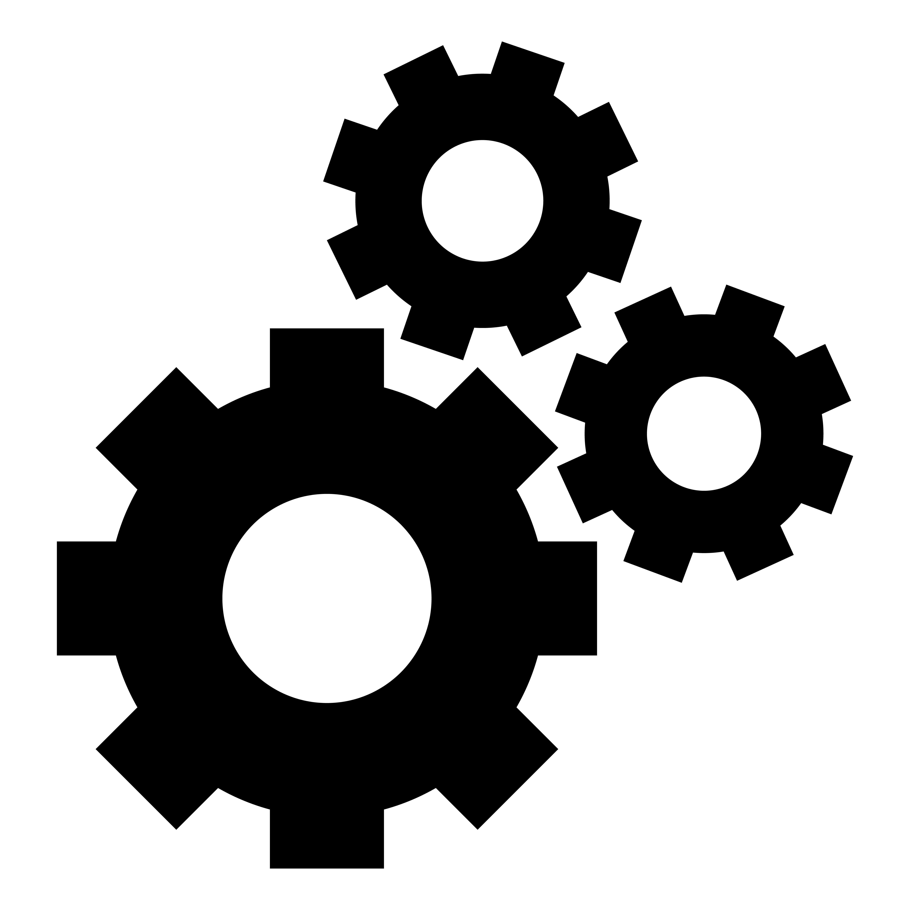

Unity VR
•
Project Manager & Gameplay Dev
Prata VR Simulator [WIP]
Immersive VR culinary simulation game. Overseeing production via JIRA while scripting AI Agent behaviour in Unity.
- Liased with Professors to manage shrinking manpower & secure critical testing hardware
- Managed team workflows, backlog grooming, and sprint roadmaps using JIRA.
- Prototyping custom discord bot to automate Jira workflows and ease backlog management
- Designed Whitebox levels to fast track environment art workflows
Unity
C#
Python
Jira